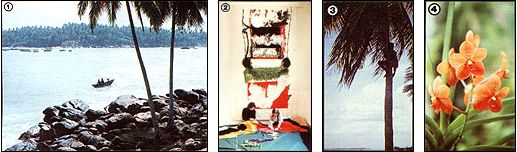

Sri Lanka Photos by Wil Weber , Scandinavian Photos Courtesy of The Finnish Tourist Board
[1] A native boat glides over a Sri Lanka Bay. [2] Fiber arts play a large role in Scandinavian crafts. [3] Boys in search of coconuts will be a common sight in both the South Seas and Sri Lanka. [4] So will some of the world's most beautiful and exotic tropical flowers, such as these orchids.